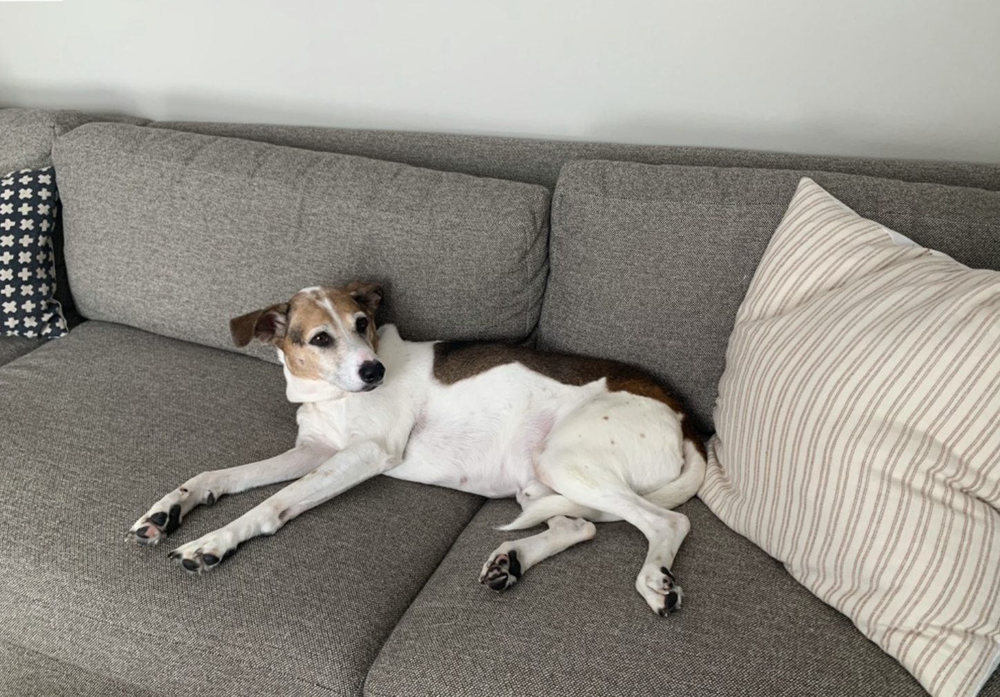

Reading
After wasting months of my life on reels, I have decided to take up reading to get back my time.
Cooking
I have enjoyed eating all of my life but I have recently explored cooking, but not baking.
Running
After not running all of my life I have picked it up as a past time because of how happy I am after running.
My Dog
This is my dog Elvis. He is a hound mix who my family rescued from the animal shelter and has been a part of our lives for 13 of his 14 years alive so far. Some of his favorite past-times include:
- Resting
- Eating
- Barking at his Shadow

Memorial Library
After a surprisingly strenuous application session, I wrote an essay and had 2 interviews to get the memorial library front desk job. I can't speak more highly about it. It is a great job and I am privileged to have it.
Housing
Freshman Year while living in the dorms I picked up this job to guarantee that I lived in Sellery. It turns out some really cool people that I loved working with. Unfortunately I had a better opportunity come up that I had to pursue instead.